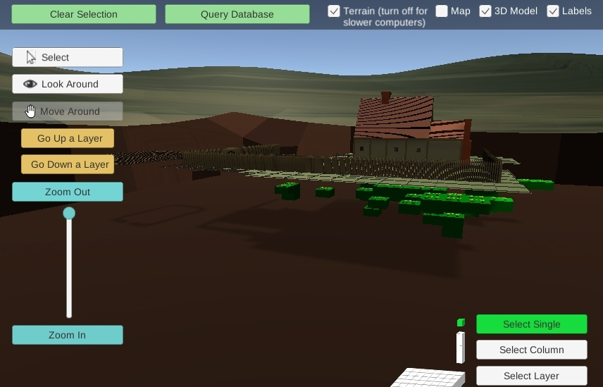

The Flowerdew Hundred Unity Sim is a WebGL widget that connects to a Drupal Database, allowing students to explore real data from an archeological dig and visualize it in relation to models and dirt strata. It is a novel way to explore the Harris Matrix-- a common tool in archeology

It is used by undergraduate students at the University of Virginia and is available via CC license to any interested party.
The Drupal -> Unity bridge was built by BitSource.